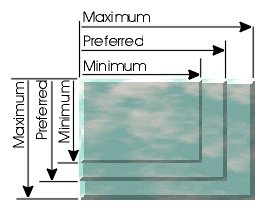
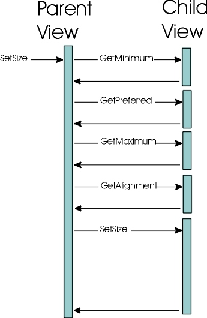

javax.swing.text.View
javax.swing.text.View
|
JavaTM 2 Platform Standard Ed. 6 |
|||||||||
| 上一个类 下一个类 | 框架 无框架 | |||||||||
| 摘要： 嵌套 | 字段 | 构造方法 | 方法 | 详细信息： 字段 | 构造方法 | 方法 | |||||||||
java.lang.Object
public abstract class View
View 类是 text 包极为重要的一部分。顾名思义，其表示文本模型的一个视图或者文本模型的一部分。负责文本组件外观的正是此类。View 无意成为用户必须学习的全新内容，相反其更像是一个轻量级组件。
在默认情况下，视图是很轻量的。它包含一个对父视图的引用，由此能获取许多内容而无需保持状态，它还包含一个对模型 (Element) 某部分的引用。视图无需精确地表示模型中的元素，而只是使用一个典型而便利的映射。视图可以选择性地维护一对 Position 对象，从而维护其在模型中的位置（即表示一个元素段）。这通常是将视图拆分为片的格式化的结果。与元素坚固联系的便利之处在于使其更容易地构建工厂来生成视图，还能使其在模型更改时更容易地跟踪视图片，并且视图一定会更改视图来反映该模型。因此，简单的视图直接表示一个 Element，而复杂的视图并不如此。
视图具有以下责任：
视图有一个 setSize 方法，该方法如同 Component 中的 doLayout 和 setSize 组合而成。视图有一个 preferenceChanged 方法，该方法与 Component 中的 invalidate 类似，但该方法可以仅使一个轴无效并标识请求更改的子级。
View 根据三个值（即最小跨距、首选跨距、最大跨距）来表示其所需的大小。视图中的布局可以在独立于每一个轴来完成。对于一个运行正常的 View 实现，将满足：最小跨距 <= 首选跨距 <= 最大跨距。

布局最小值的设置方法有：
方法 setSize 应当准备好被多次调用（即使在大小没有更改时也可能调用此方法）。通常调用 setSize 方法来确保试图在视图上执行需要更新布局的操作之前，已经完成了 View 布局。应该始终 将视图的大小设置为该视图所指定的最小跨距和最大跨距之间的某个值。此外，如果视图已经更改了其需要的布局值，并且希望其父级遵守该值，则必须一直在其父级上调用 preferenceChanged 方法。在发送了 preferenceChanged 之前，父 View 无需识别更改。如果需要的话，此类允许父 View 实现缓存子级的需求。调用序列如下所示：

确切的调用序列取决于父视图的布局功能（如果该视图具有任何子级）。在决定提供给每个子级的内容之前，视图可能收集子级的优先权，或者其可能一次一个地迭代更新子级。
这在 paint 方法中完成，该方法与组件的 paint 方法非常类似。期望 View 潜在地组装一个相当大的树。对于呈现，View 具有如下语义：
Component（即由 getContainer 方法返回的 Component）相同。这意味着子视图与父级处于同一个坐标系统中，除非父级显式地改变了坐标系统。要安排重绘本身，视图可以在承载 Component 上调用 repaint。
Graphics 对象没有以任何方式初始化。视图应该设置任何所需的设置。
View 本身是透明的。虽然视图可以呈现在其整个分配中，但通常视图不这么做。通过向下遍历 View 实现树来执行呈现。每个 View 负责呈现其子级。线程安全取决于此行为。虽然视图实现不必要在实现时考虑线程安全，但是其他确实利用了并发的视图实现可以依赖树遍历来保证线程安全。
用于呈现的方法有：
因为视图对象产生自一个工厂，因而不能指望其必然处于某个特定模型，所以用户必须要能够执行转换以恰当地定位模型的空间表示形式。执行此操作的方法有：
在尝试进行转换之前布局必须有效。当通过 DocumentEvent 从模型广播更改时，转换无效并且禁止尝试。
如果总体视图由多片（如果希望更改视图并写入最小数量的新代码，这是最佳的情形）表示，而具有大量的 DocumentListener 是不现实的。如果每个视图都侦听模型，在任意给定的时间上，仅有少数视图可能对所广播的更改实际感兴趣。因为模型不了解视图，所以没有方法来过滤更改信息的广播。视图层次结构本身就代为负责传播更改信息。在视图层次结构的任何一层上，视图都足够了解其子级，从而能最佳地进一步分发更改信息。因此，更改从视图层次结构的根开始广播。执行此操作的方法有：
| 字段摘要 | |
|---|---|
static int |
BadBreakWeight
该权重指示对于格式化来说视图未处于拆分的好时机。 |
static int |
ExcellentBreakWeight
该权重指示视图支持拆分，并且表示拆分的极好时机。 |
static int |
ForcedBreakWeight
该权重指示视图支持拆分，并且在被置入一个通过拆分其子级来格式化子级的视图时，必须拆分该视图以恰当的表示它。 |
static int |
GoodBreakWeight
该权重指示视图支持拆分，但是可能存在更好时机。 |
static int |
X_AXIS
用于格式化/拆分操作的轴。 |
static int |
Y_AXIS
用于格式化/拆分操作的轴。 |
| 从接口 javax.swing.SwingConstants 继承的字段 |
|---|
BOTTOM, CENTER, EAST, HORIZONTAL, LEADING, LEFT, NEXT, NORTH, NORTH_EAST, NORTH_WEST, PREVIOUS, RIGHT, SOUTH, SOUTH_EAST, SOUTH_WEST, TOP, TRAILING, VERTICAL, WEST |
| 构造方法摘要 | |
|---|---|
View(Element elem)
创建一个新的 View 对象。 |
|
| 方法摘要 | |
|---|---|
void |
append(View v)
追加单个子视图。 |
View |
breakView(int axis,
int offset,
float pos,
float len)
试图在给定的轴上拆分视图。 |
void |
changedUpdate(DocumentEvent e,
Shape a,
ViewFactory f)
发出通知，通知文档此视图负责的位置处的属性已更改。 |
View |
createFragment(int p0,
int p1)
创建一个表示元素某部分的视图。 |
protected void |
forwardUpdate(DocumentEvent.ElementChange ec,
DocumentEvent e,
Shape a,
ViewFactory f)
将给定的 DocumentEvent 转发给需要被通知模型更改的子视图。 |
protected void |
forwardUpdateToView(View v,
DocumentEvent e,
Shape a,
ViewFactory f)
将 DocumentEvent 转发到给定的子视图。 |
float |
getAlignment(int axis)
确定此视图沿某个轴所需的对齐方式。 |
AttributeSet |
getAttributes()
获取呈现时要使用的属性。 |
int |
getBreakWeight(int axis,
float pos,
float len)
确定此视图中拆分时机的权重大小。 |
Shape |
getChildAllocation(int index,
Shape a)
获取给定子视图的分配。 |
Container |
getContainer()
获取承载视图的容器。 |
Document |
getDocument()
获取与视图关联的模型。 |
Element |
getElement()
获取此视图所映射的主题的结构化部分。 |
int |
getEndOffset()
获取此视图负责的模型的一部分。 |
Graphics |
getGraphics()
获取用于呈现的 Graphics。 |
float |
getMaximumSpan(int axis)
确定此视图沿某个轴的最大跨距。 |
float |
getMinimumSpan(int axis)
确定此视图沿某个轴的最小跨距。 |
int |
getNextVisualPositionFrom(int pos,
Position.Bias b,
Shape a,
int direction,
Position.Bias[] biasRet)
提供某种途径来确定可以放置一个插入符的下一个可视表示模型位置。 |
View |
getParent()
返回视图的父级。 |
abstract float |
getPreferredSpan(int axis)
确定此视图沿某个轴的首选跨距。 |
int |
getResizeWeight(int axis)
确定视图沿给定轴的大小可调整性。 |
int |
getStartOffset()
获取此视图负责的模型的一部分。 |
String |
getToolTipText(float x,
float y,
Shape allocation)
返回提定位置的工具提示文本。 |
View |
getView(int n)
获取第 n 个子视图。 |
int |
getViewCount()
返回此视图中的视图数。 |
ViewFactory |
getViewFactory()
获取将提供给视图层次结构的 ViewFactory 实现。 |
int |
getViewIndex(float x,
float y,
Shape allocation)
返回表示视图中给定位置的子视图索引。 |
int |
getViewIndex(int pos,
Position.Bias b)
返回表示模型中给定位置的子视图索引。 |
void |
insert(int offs,
View v)
插入单个子视图。 |
void |
insertUpdate(DocumentEvent e,
Shape a,
ViewFactory f)
发出通知，通知在文档中此视图负责的某个位置已插入内容。 |
boolean |
isVisible()
返回一个指示视图是否可视的 boolean 值。 |
Shape |
modelToView(int p0,
Position.Bias b0,
int p1,
Position.Bias b1,
Shape a)
为给定区域提供从文档模型坐标空间到视图坐标空间的映射。 |
Shape |
modelToView(int pos,
Shape a)
已过时。 |
abstract Shape |
modelToView(int pos,
Shape a,
Position.Bias b)
为给定字符提供从文档模型坐标空间到视图坐标空间的映射。 |
abstract void |
paint(Graphics g,
Shape allocation)
使用给定的呈现表面和该表面上的区域来呈现。 |
void |
preferenceChanged(View child,
boolean width,
boolean height)
子视图能在父级上调用此方法来指示首选项已经更改，并且应该重新考虑布局。 |
void |
remove(int i)
移除给定位置处的一个子级。 |
void |
removeAll()
移除所有子级。 |
void |
removeUpdate(DocumentEvent e,
Shape a,
ViewFactory f)
给出从文档中此视图负责的位置移除了某些内容的通知。 |
void |
replace(int offset,
int length,
View[] views)
替代子视图。 |
void |
setParent(View parent)
为此视图建立父视图。 |
void |
setSize(float width,
float height)
设置视图的大小。 |
protected boolean |
updateChildren(DocumentEvent.ElementChange ec,
DocumentEvent e,
ViewFactory f)
更新子视图以响应接收模型变化的通知，并且有一条此视图负责的元素的变化记录。 |
protected void |
updateLayout(DocumentEvent.ElementChange ec,
DocumentEvent e,
Shape a)
更新布局，以响应从模型接受的更改通知。 |
int |
viewToModel(float x,
float y,
Shape a)
已过时。 |
abstract int |
viewToModel(float x,
float y,
Shape a,
Position.Bias[] biasReturn)
提供从视图坐标空间到模型的逻辑坐标空间的映射。 |
| 从类 java.lang.Object 继承的方法 |
|---|
clone, equals, finalize, getClass, hashCode, notify, notifyAll, toString, wait, wait, wait |
| 字段详细信息 |
|---|
public static final int BadBreakWeight
getBreakWeight(int, float, float),
GoodBreakWeight,
ExcellentBreakWeight,
ForcedBreakWeight,
常量字段值public static final int GoodBreakWeight
getBreakWeight(int, float, float),
BadBreakWeight,
ExcellentBreakWeight,
ForcedBreakWeight,
常量字段值public static final int ExcellentBreakWeight
getBreakWeight(int, float, float),
BadBreakWeight,
GoodBreakWeight,
ForcedBreakWeight,
常量字段值public static final int ForcedBreakWeight
getBreakWeight(int, float, float),
BadBreakWeight,
GoodBreakWeight,
ExcellentBreakWeight,
常量字段值public static final int X_AXIS
public static final int Y_AXIS
| 构造方法详细信息 |
|---|
public View(Element elem)
View 对象。
elem - 要表示的 Element| 方法详细信息 |
|---|
public View getParent()
nullpublic boolean isVisible()
public abstract float getPreferredSpan(int axis)
axis - 可能是 View.X_AXIS 或者 View.Y_AXIS
getPreferredSpan(int)public float getMinimumSpan(int axis)
axis - 可能是 View.X_AXIS 或者 View.Y_AXIS
getPreferredSpan(int)public float getMaximumSpan(int axis)
axis - 可能是 View.X_AXIS 或者 View.Y_AXIS
getPreferredSpan(int)
public void preferenceChanged(View child,
boolean width,
boolean height)
revalidate。
child - 子视图width - 如果宽度首选项更改，则该参数为 trueheight - 如果高度首选项更改，则该参数为 trueJComponent.revalidate()public float getAlignment(int axis)
axis - 可能是 View.X_AXIS 或者 View.Y_AXIS
public abstract void paint(Graphics g,
Shape allocation)
g - 要使用的呈现表面allocation - 分配的要在其中呈现的区域public void setParent(View parent)
super.setParent()。
parent - 新的父级，如果要从父级中移除视图，则为 nullpublic int getViewCount()
getViewCount()public View getView(int n)
null。
n - 要获取的视图的编号，该值 >= 0 && < getViewCount()
public void removeAll()
replace 的便捷调用。
public void remove(int i)
replace 的便捷调用。
public void insert(int offs,
View v)
replace 的便捷调用。
offs - 要其前插入视图的偏移量，该值 >= 0v - 视图replace(int, int, javax.swing.text.View[])public void append(View v)
replace 的便捷调用。
v - 视图replace(int, int, javax.swing.text.View[])
public void replace(int offset,
int length,
View[] views)
null，并且移除对它们的内部引用以便能被垃圾回收。实现此方法以不执行任何操作，因为默认情况下视图没有任何子级。
offset - 子视图中插入新 views 的起始索引。这应当是一个 >= 0 并且 <= getViewCount 的值length - 要移除的已存在的子视图数 这应当是一个 >= 0 并且 <= (getViewCount() - offset) 的值。views - 要添加的子视图。此值可以为 null，指示当前不添加任何子级（移除时很有用）
public int getViewIndex(int pos,
Position.Bias b)
pos - 位置，该值 >= 0
public Shape getChildAllocation(int index,
Shape a)
null。
index - 子级的索引，该值 >= 0 && < getViewCount()a - 此视图的分配
public int getNextVisualPositionFrom(int pos,
Position.Bias b,
Shape a,
int direction,
Position.Bias[] biasRet)
throws BadLocationException
pos - 要转换的位置，该值 >= 0a - 为呈现分配的区域direction - 以当前位置开始的方向，可以将它们设想为通常出现在键盘上的箭头键。它将是以下值之一：
BadLocationException
IllegalArgumentException - 如果 direction 不具有上述合法值之一
public abstract Shape modelToView(int pos,
Shape a,
Position.Bias b)
throws BadLocationException
pos - 所需字符的位置 (>=0)a - 包围了请求字符的视图区域b - 当位置是两个视图的边界时，该参数是离由偏移量表示的前一个字符或者下一个字符的偏差；b 将是这些值之一：
Position.Bias.Forward
Position.Bias.Backward
BadLocationException - 如果给定的位置不表示关联文档中的一个有效位置
IllegalArgumentException - 如果 b 上文列出的 Position.Bias 的合法值之一viewToModel(float, float, java.awt.Shape, javax.swing.text.Position.Bias[])
public Shape modelToView(int p0,
Position.Bias b0,
int p1,
Position.Bias b1,
Shape a)
throws BadLocationException
p0 - 第一个字符的位置 (>=0)b0 - 当位置是两个视图的一个边界时，第一个字符位置离由偏移量表示的前一个字符或下一个字符的偏差；b0 将是这些值之一：
Position.Bias.Forward
Position.Bias.Backward
p1 - 最后一个字符的位置 (>=0)b1 - 第二个字符位置的偏差，由上文所示的合法值之一来定义a - 包围了请求区域的视图区域
BadLocationException - 如果给定的位置不表示关联文档中的一个有效位置
IllegalArgumentException - 如果 b0 或者 b1 不是上文列出的 Position.Bias 的合法值之一viewToModel(float, float, java.awt.Shape, javax.swing.text.Position.Bias[])
public abstract int viewToModel(float x,
float y,
Shape a,
Position.Bias[] biasReturn)
biasReturn 参数来指示给定的点更接近于模型中的下一个字符还是前一个字符。
x - X 坐标，该值 >= 0y - Y 坐标，该值 >= 0a - 要在其中呈现的分配区域
biasReturn 参数来指示给定的点更接近于模型中的下一个字符还是前一个字符。
public void insertUpdate(DocumentEvent e,
Shape a,
ViewFactory f)
e - 来自关联文档的更改信息a - 视图的当前分配区域f - 用于重建的工厂（如果该视图有子级）insertUpdate(javax.swing.event.DocumentEvent, java.awt.Shape, javax.swing.text.ViewFactory)
public void removeUpdate(DocumentEvent e,
Shape a,
ViewFactory f)
e - 来自关联文档的更改信息a - 视图的当前分配区域f - 用于重建的工厂（如果该视图有子级）removeUpdate(javax.swing.event.DocumentEvent, java.awt.Shape, javax.swing.text.ViewFactory)
public void changedUpdate(DocumentEvent e,
Shape a,
ViewFactory f)
e - 发自关联文档的更改信息a - 视图的当前分配f - 视图有子级时用于重建的工厂 View#changedUpdatepublic Document getDocument()
nullgetDocument()public int getStartOffset()
getStartOffset()public int getEndOffset()
getEndOffset()public Element getElement()
getElement()public Graphics getGraphics()
Graphics。此方法可以用来确定字符特征，并且它对于打印视图和组件视图是不同的。
Graphics 对象public AttributeSet getAttributes()
AttributeSet 来访问它们。
public View breakView(int axis,
int offset,
float pos,
float len)
实现此方法以返回视图本身，这表示在不可拆分时的默认行为。如果视图确实支持拆分，返回的视图的起始偏移量应当是给定的偏移量，并且结尾偏移量应当小于或者等于要被拆分的视图的结尾偏移量。
axis - 可能是 View.X_AXIS 或者 View.Y_AXISoffset - 文档模型中拆分段将占用的位置，该值 >= 0。这可能是该段返回的起始偏移量pos - 拆分视图将沿轴占用的位置，该值 >= 0。这对制表符计算之类的操作很有用。len - 指定所需的可能的拆分沿轴的距离，该值 >= 0
ParagraphView
public View createFragment(int p0,
int p1)
p0 - 起始偏移量，该值 >= 0。此值应当是一个大于等于元素起始偏移量且小于元素结尾偏移量的值。p1 - 结尾偏移量，该值 > p0。此值应当是一个小于等于元素结尾偏移量且大于元素起始偏移量的值。
LabelView
public int getBreakWeight(int axis,
float pos,
float len)
breakView 的视图。例如，表示其中具有空格的文本的视图可能比没有空格的视图更倾向拆分。权值越高，拆分的倾向性更大。等于或者小于 BadBreakWeight 的值不应被考虑进行拆分。大于或者等于 ForcedBreakWeight 值应该被拆分。
实现此方法以提供返回 BadBreakWeight 的默认行为，除非长度大于视图长度，在这种情况下整个视图表示一个段。除非一个视图被写入支持拆分行为，否则不倾向于试图并拆分视图。一定支持拆分的视图例子是 LabelView。使用拆分权值的视图示例是 ParagraphView。
axis - 可能是 View.X_AXIS 或者 View.Y_AXISpos - 拆分视图开始的可能的位置，该值 >= 0。这可能对于计算制表符位置很有用。len - 指定自 pos（可能需要拆分的位置）的相对长度，该值 >= 0
LabelView,
ParagraphView,
BadBreakWeight,
GoodBreakWeight,
ExcellentBreakWeight,
ForcedBreakWeightpublic int getResizeWeight(int axis)
axis - 可能是 View.X_AXIS 或 View.Y_AXIS
public void setSize(float width,
float height)
width - 宽度，该值 >= 0height - 高度，该值 >= 0public Container getContainer()
nullpublic ViewFactory getViewFactory()
ViewFactory 实现。通常将视图提供给此方法作为参数，以便在它们最可能需要该工厂的时候根据模型更新，但是在其他时候，此方法便以足够。
null
public String getToolTipText(float x,
float y,
Shape allocation)
JTextComponent.getToolTipText(java.awt.event.MouseEvent)
public int getViewIndex(float x,
float y,
Shape allocation)
x、y 的边界的子级。
x - x 坐标y - y 坐标allocation - View 中的当前分配。
protected boolean updateChildren(DocumentEvent.ElementChange ec,
DocumentEvent e,
ViewFactory f)
ViewFactory 用来为每个元素创建子视图，这些子视图将从给定的 ElementChange 中指定的索引开始被添加到 ElementChange 中。移除表示已移除指定元素的子视图数目。
ec - 此视图所负责的元素的更改信息。如果调用此方法，该参赛不应当为 nulle - 来自关联文档的变化信息f - 用于构建子视图的工厂
insertUpdate(javax.swing.event.DocumentEvent, java.awt.Shape, javax.swing.text.ViewFactory),
removeUpdate(javax.swing.event.DocumentEvent, java.awt.Shape, javax.swing.text.ViewFactory),
changedUpdate(javax.swing.event.DocumentEvent, java.awt.Shape, javax.swing.text.ViewFactory)
protected void forwardUpdate(DocumentEvent.ElementChange ec,
DocumentEvent e,
Shape a,
ViewFactory f)
DocumentEvent 转发给需要被通知模型更改的子视图。如果此视图负责的元素发生了更改，则在转发时应当考虑该更改（即新子视图不应该获得通知）。
ec - 此视图所负责的元素的更改（如果没有任何更改，则为 null）。e - 来自关联文档的更改信息a - 视图的当前分配区域f - 用于重建的工厂（如果该视图有子级）insertUpdate(javax.swing.event.DocumentEvent, java.awt.Shape, javax.swing.text.ViewFactory),
removeUpdate(javax.swing.event.DocumentEvent, java.awt.Shape, javax.swing.text.ViewFactory),
changedUpdate(javax.swing.event.DocumentEvent, java.awt.Shape, javax.swing.text.ViewFactory)
protected void forwardUpdateToView(View v,
DocumentEvent e,
Shape a,
ViewFactory f)
DocumentEvent 转发到给定的子视图。此方法只是根据实际类型，通过对 insertUpdate、removeUpdate 或者 changedUpdate 的调用来将消息传递给视图。此方法由 forwardUpdate 调用来将事件转发给需要它的子级。
v - 作为事件转发目标的子视图e - 来自关联文档的更改信息a - 视图的当前分配f - 用于重建的工厂（如果视图有子级）forwardUpdate(javax.swing.event.DocumentEvent.ElementChange, javax.swing.event.DocumentEvent, java.awt.Shape, javax.swing.text.ViewFactory)
protected void updateLayout(DocumentEvent.ElementChange ec,
DocumentEvent e,
Shape a)
ElementChange 记录不为 null，则实现此方法来调用 preferenceChanged 以重新计划一个新的布局。
ec - 此视图所负责的元素的更改（如果没有任何更改则为 null）e - 来自关联文档的更改信息a - 视图的当前分配insertUpdate(javax.swing.event.DocumentEvent, java.awt.Shape, javax.swing.text.ViewFactory),
removeUpdate(javax.swing.event.DocumentEvent, java.awt.Shape, javax.swing.text.ViewFactory),
changedUpdate(javax.swing.event.DocumentEvent, java.awt.Shape, javax.swing.text.ViewFactory)
@Deprecated
public Shape modelToView(int pos,
Shape a)
throws BadLocationException
Position.Bias.Forward。
pos - 要转换的位置，该值 >= 0a - 分配的要在其中呈现的区域
BadLocationException - 如果给定位置在所关联的文档中不是一个有效位置modelToView(int, java.awt.Shape, javax.swing.text.Position.Bias)
@Deprecated
public int viewToModel(float x,
float y,
Shape a)
x - X 坐标，该值 >= 0y - Y 坐标，该值 >= 0a - 分配的要在其中呈现的区域
viewToModel(float, float, java.awt.Shape, javax.swing.text.Position.Bias[])
|
JavaTM 2 Platform Standard Ed. 6 |
|||||||||
| 上一个类 下一个类 | 框架 无框架 | |||||||||
| 摘要： 嵌套 | 字段 | 构造方法 | 方法 | 详细信息： 字段 | 构造方法 | 方法 | |||||||||
版权所有 2008 Sun Microsystems, Inc. 保留所有权利。请遵守GNU General Public License, version 2 only。